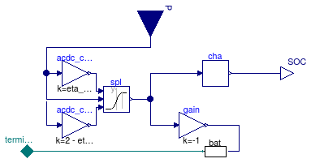

Package with models for electrical storage with a AC one phase connector
Information
This package contains models for storage elements with an AC one phase connector.
Extends from Modelica.Icons.Package (Icon for standard packages).
Package Content
| Name |
Description |
 Battery Battery
|
Simple model of a battery |
 Examples Examples
|
Package with example models |
Simple model of a battery

Information
Simple model of a battery.
This model takes as an input the power to be stored in the battery (if P > 0)
or to be extracted from the battery. This model has a one phase AC connector
and takes into account the efficiency of the conversion
between DC and AC ηDCAC.
The output connector SOC is the state of charge of the battery.
This model does not enforce that the state of charge is between zero and one.
However, each time the state of charge crosses zero or one, a warning will
be written to the simulation log file.
The model also does not limit the current through the battery. The user should
provide a control so that only a reasonable amount of power is exchanged,
and that the state of charge remains between zero and one.
Extends from Buildings.Electrical.Interfaces.PartialAcDcParameters (Partial model that contains basic parameters for a DC/AC conversion system).
Parameters
| Type | Name | Default | Description |
|---|
| replaceable package PhaseSystem | Buildings.Electrical.PhaseSy... | Phase system |
| Real | etaCha | 0.9 | Efficiency during charging [1] |
| Real | etaDis | 0.9 | Efficiency during discharging [1] |
| Real | SOC_start | | Initial charge |
| Energy | EMax | | Maximum available charge [J] |
| Voltage | V_nominal | | Nominal voltage (V_nominal >= 0) [V] |
| Boolean | linearized | false | If =true introduce a linearization in the load |
| Terminal_p | terminal | redeclare Buildings.Electric... | Generalized terminal |
| AC-Conversion |
| Real | pf | 0.9 | Power factor |
| Real | eta_DCAC | 0.9 | Efficiency of DC/AC conversion |
| Initialization |
| InitMode | initMode | Buildings.Electrical.Types.I... | Initialization mode for homotopy operator |
Connectors
| Type | Name | Description |
|---|
| replaceable package PhaseSystem | Phase system |
| input RealInput | P | Power stored in battery (if positive), or extracted from battery (if negative) [W] |
| output RealOutput | SOC | State of charge |
| Terminal_p | terminal | Generalized terminal |
Modelica definition
model Battery
"Simple model of a battery"
extends Buildings.Electrical.Interfaces.PartialAcDcParameters;
replaceable package PhaseSystem =
Buildings.Electrical.PhaseSystems.OnePhase constrainedby
Buildings.Electrical.PhaseSystems.PartialPhaseSystem
"Phase system";
parameter Real etaCha(min=0, max=1, unit="1") = 0.9
"Efficiency during charging";
parameter Real etaDis(min=0, max=1, unit="1") = 0.9
"Efficiency during discharging";
parameter Real SOC_start(start=0.1)
"Initial charge";
parameter Modelica.SIunits.Energy EMax(min=0, displayUnit="kWh")
"Maximum available charge";
parameter Modelica.SIunits.Voltage V_nominal(start = 110)
"Nominal voltage (V_nominal >= 0)";
parameter Boolean linearized=false
"If =true introduce a linearization in the load";
parameter Buildings.Electrical.Types.InitMode initMode(
min=Buildings.Electrical.Types.InitMode.zero_current,
max=Buildings.Electrical.Types.InitMode.linearized) = Buildings.Electrical.Types.InitMode.zero_current
"Initialization mode for homotopy operator";
Modelica.Blocks.Interfaces.RealInput P(unit="W")
"Power stored in battery (if positive), or extracted from battery (if negative)";
Modelica.Blocks.Interfaces.RealOutput SOC
"State of charge";
replaceable Buildings.Electrical.AC.OnePhase.Interfaces.Terminal_p
terminal
"Generalized terminal";
protected
Buildings.Electrical.DC.Storage.BaseClasses.Charge cha(
final EMax=EMax,
final SOC_start=SOC_start,
final etaCha=etaCha,
final etaDis=etaDis)
"Charge model";
replaceable Buildings.Electrical.AC.OnePhase.Loads.Resistive bat
constrainedby Buildings.Electrical.Interfaces.Load(
final initMode = initMode,
final P_nominal=0,
final mode=Buildings.Electrical.Types.Load.VariableZ_P_input,
final V_nominal=V_nominal,
final linearized=linearized)
"Power exchanged with battery pack";
Modelica.Blocks.Math.Gain gain(
final k=-1)
"Gain that invert sign of the power (P<0 -> the load is consumed)";
Modelica.Blocks.Math.Gain acdc_con_dis(
final k = 2 - eta_DCAC)
"Losses when P < 0";
Buildings.Utilities.Math.Splice spl(deltax=1e-2)
"Splice function that attributes the losses due to AC/DC conversion";
Modelica.Blocks.Math.Gain acdc_con_cha(
final k=eta_DCAC)
"Losses when P > 0";
equation
connect(cha.SOC, SOC);
connect(gain.y, bat.Pow);
connect(bat.terminal, terminal);
connect(P, acdc_con_dis.u);
connect(P, acdc_con_cha.u);
connect(acdc_con_cha.y, spl.u1);
connect(acdc_con_dis.y, spl.u2);
connect(P, spl.x);
connect(spl.y, gain.u);
connect(spl.y, cha.P);
end Battery;
Automatically generated Mon Jul 13 14:22:42 2015.